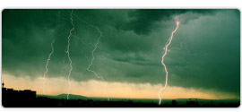
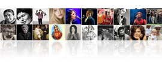
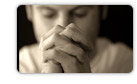
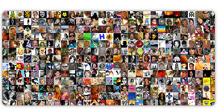
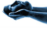
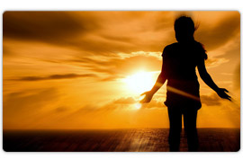
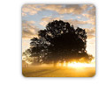

Реабилитационный центр «Лазурный берег»
В нашем центре Вы можете получить консультации и помощь квалифицированных специалистов по проблемам наркомании, алкоголизма, игровой зависимости, пройти курс реабилитации по индивидуальной методике в условиях мини-социума.
Особенности центра
-
Благоприятные природные условия. Фотогалерея
Центр расположен на берегу Черного моря в мягком субтропическом климате.
-
Эффективная программа.
О программеВ основе программы реабилитация лежит хорошо зарекомендовавшая себя за рубежом программа 12 шагов.
-
Квалифицированный персонал. Персонал центра
Отбору персонала мы уделяем особое внимание. В нашем центре работают только специалисты, имеющие многолетний опыт.
-
Индивидуальный подбор программы.
Гибкий подбор программы, как показывает практика, обеспечивает наилучший результат.
Задачи центра
- Поддержать и усилить желание человека научиться жить без алкоголя и наркотиков.
- Уйти от потребительского отношения к жизни, заменить пассивную и страдальческую позицию на ответственность.
- Усилить мотивацию для дальнейшей самостоятельной работы по этой программе.
- Помочь приобрести людям, страдающим патологической зависимостью от алкоголя и наркотиков, трезвую и чистую жизнь, а также шанс на личностное и духовное возрождение.
Этапы реабилитации (3-6 месяцев)
- Адаптация и физическое восстановление, индивидуальная работа психолога, групповая терапия, йога, плавание, фитнес.
- Проработка 1го, 2го и 3го шага при помощи консультантов-терапевтов, гештальт-терапия, арт-терапия, терапивтические треннинги, групповая терапия, индивидуальная работа психолога, разбор проблем жизни с веществами и без них.
- Социальная адаптация: посещение музеев, театров, достопримечательностей города, экскурсионная программа, походы в горы, сплав на горных реках, коньеннинг. Волонтерская программа профилактики срыва, посещение групп АА/АН в городе.
Принципы работы центра
- Пребывание человека в центре строго конфиденциально.
- Жизнь человека в центре строится по четкой динамичной модели.
- Работы с каждым проводится по индивидуальному плану.
- Отношения между персоналом и резидентами строится на основе взаимного уважения, понимания и доверия.
В наш центр может обратиться любой желающий – независимо от возраста, пола, вероисповедания, философских взглядов и мировоззрения.
Здесь мы помогаем зависимым поддержать и усилить желание научиться жить без алкоголя и наркотиков, уйти от потребительского отношения к жизни, заменить пассивную и страдальческую позицию на ответственность, приобрести трезвую и чистую жизнь, а также шанс на личностное и духовное возрождение.
Реабилитационный центр расположен в отдалённом от города месте на Черноморском побережье. Климат этой территории уникален, морской и горный воздух сами по себе имеют лечебные свойства, оказывая оздоровительный эффект на организм человека. Мы предоставляем все необходимые условия для успешной реабилитации и адаптации.
У нас Вы сможете анонимно получить важную и полную информацию по вопросам связанным с лечением и реабилитацией людей страдающих наркоманией, алкоголизмом и другими видами зависимости.
Мы всегда открыты для сотрудничества в сфере профилактики химических зависимостей и других форм аддиктивного поведения.
Программам 12 шагов.
Реабилитационный центр социальной адаптации "Лазурный берег" проводит лечение на основе всемирно признанной программы "12 шагов", цель которой - возвращение человека, имеющего химическую зависимость к полноценной жизни без наркотиков, алкоголя и игровой зависимости.
Основой программы и лечения является осознание человеком своей болезни, работа над собой, изменение своих взглядов на жизнь, приобретение жизненных целей. Ведь только при таких условиях выздоровление будет результативным.
Успешный опыт программы показывает, что помощь одного наркомана другому, на принципах "равный-равному", в терапевтическом смысле не имеет аналогов.
Шаг 1.
Мы признали свое бессилие перед алкоголем или наркотиками, признали, что мы потеряли контроль над собой.
Шаг 2.
Пришли к убеждению, что только Сила более могущественная, чем мы, может вернуть нам здравомыслие. 
Шаг 3.
Приняли решение препоручить нашу волю и нашу жизнь Богу, как мы Его понимали.
Шаг 4.
Глубоко и бесстрашно оценили себя и свою жизнь с нравственной точки зрения. 
Шаг 5.
Признали перед Богом, собой и каким-либо другим человеком истинную природу наших заблуждений.
Шаг 6.
Полностью подготовили себя к тому, чтобы Бог избавил нас от всех наших недостатков.

Шаг 7.
Смиренно просили Его исправить наши изъяны.
Шаг 8.
Составили список всех тех людей, кому мы причинили зло, и преисполнились желанием загладить свою вину перед ними. 
Шаг 9.
Лично возмещали причиненный этим людям ущерб, где только возможно, кроме тех случаев, когда это могло повредить им или кому-либо другому.

Шаг 10.
Продолжали самоанализ и, когда допускали ошибки, сразу признавали это.
Шаг 11.
Стремились путем молитвы и размышления углубить соприкосновение с Богом, как мы понимали Его, молясь лишь о знании Его воли, которую нам надлежит исполнить, и о даровании силы для этого. 

Шаг 12.
Достигнув духовного пробуждения, к которому привели эти шаги, мы старались донести смысл наших идей до других алкоголиков и наркоманов, и применять эти принципы во всех наших делах.
Важные аспекты реабилитации
Общение только с выздоравливающими зависимыми и персоналом.
Пребывание в режиме информационного голода, когда возможно сфокусировать мышление человека на самого себя.
Приобретение навыков по обеспечению себя элементарными условиями быта.
Создание вдали от цивилизации и городских условий мини-модель социальной среды и адаптация в ней.
Методика реабилитации в Центре является нерелигиозной и немедикаментозной, предполагает индивидуальный подход к каждому и постепенное восстановление тех сфер жизнедеятельности зависимого, которые были разрушены в процессе употребления наркотиков.
Персонал центра.
В Центре работают терапевты-психологи, имеющие большой опыт в вопросах решения проблем при наркозависимости, алкоголизме и игровой зависимости. К каждому больному специалисты подходят индивидуально, учитывая специфику характера, длительность заболевания, и другие характеристики, необходимые для скорейшего выздоровления.
Шабункин Евгений Александрович.
Консультант-психолог, руководитель программы центра. Высшее психологическое образование (НГУ), МГИП 3 ступень гештальт-терапии, школа интегральной гуманистической практической психологии им. Криндич, член Европейской ассоциации профессиональной психотерапевтической лиги, практикующий психолог с 2006 года.Колосов Дмитрий Анатольевич.
Неоконченное высшее, специалист по хим. зависимости, консультант.Лопандин Антон Андреевич.
Высшее экономичеко образование, специалист по химической зависимости, директор РЦ «Лазурный берег».Рыбкин Дмитрий Анатольевич.
Консультант-психолог, преподаватель йоги, МГИП 1 ступень гештальт-терапии, образование среднетехническое АСУ.Коблев Модин Джанбекович.
Высшее психологическое образование, практикующий психотерапевт с 2001 года.
Отзывы о нашем центре.
Нигде не найти более полную информацию о нашем центре, чем в отзывах наших клиентов.
Привет, меня зовут Валера, я — наркоман, наверное так началась новая жизнь, в которую я уже не верил. Читать далее
Меня зовут Наталья, я наркоманка. Шесть лет я употребляла наркотики, но пришел момент, когда я уже не могла употреблять, не было ни сил ни возможности ни здоровья. Читать далее
Меня зовут Стас. В реб.центр я попал по рекомендации старого друга. У меня были проблеммы с наркотиками. Я употреблял с 16 лет лёгкие наркотики. В 20 лет я начал колоться, в 25 я уже сидел на системе и кололся каждый день от двух до шести раз за день. Читать далее
Благодаря Лазурному берегу я жив и ещё как жив и всё живее и живее, благодаря им я получил знание применимое к жизни, и смог восстановить свою разрушенную жизнь. Читать далее
Я 6 лет употреблял героин, это был АД! За эти годы я потерял все, что у меня было, кроме семьи, которая всё это время пыталась меня спасти. Я побывал во многих клиниках, перепробовал кучу программ реабилитации, но ничего не помогало, и я вновь возвращался к наркотикам. Я почти уже смирился с мыслью что "бывших наркоманов не бывает", но в один прекрасный день мне позвонил мой старый знакомый. Читать далее
Когда я в первый раз услышала о центре «Лазурный берег», то мне было тяжело понять чем там занимаются и как конкретно они помогают людям столкнувшемся с проблемой наркотиков. Читать далее
Это был мой последний шанс спасти своего единственного сына. Я не могла сидеть сложа руки и ждать каждый день, что опять придется смотреть на него уже почти мертвого и слышать от врачей о том, что они ни чем не могут помочь. Читать далее
Я хочу сказать большое-большое спасибо этому центру и его сотрудникам за то, что помогли мне избавится от наркотической зависимости. Читать далее
Многие мои друзья прошли программу восстановления от наркотиков в центре Лазурный берег, г. Сочи. Я могу заявить с полной ответственностью, что те люди, которые прошли программу полностью и для себя, не возвращаются к наркотикам. Читать далее
В этом центре работают квалифицированные специалисты. Самое главное нужно иметь безоговорочное желание и знать для самого себя, что программу ты проходишь не для кого-то, а для себя. Читать далее
Лазурный берег в Сочи помог мне обрести стабильность в жизни, которой у меня не было. Была неопределенность и не было цели, поэтому наркотики были очень привлекательны для меня. Читать далее
Этот центр вернул мне жизнь, только благодаря Лазурному берегу и его сотрудникам я сейчас могу дышать полной грудью и жить полноценной жизнью. Читать далее
Хочу сказать огромное спасибо сотрудникам Лазурного берега, не только как сотрудникам. Ведь в действительности они помогают наркозависимым не только как сотрудники, а как люди. Читать далее
В центре мне очень нравиться: хорошее питание,походы,занятия спортом, лояльное отношение персонала основанное на доверии. Есть психолог который мне помогает разобрать проблемы которые привели меня к употреблению. Здесь прекрасный сад, море, разнообразные мероприятия: фильмы, караоке, шашлыки. Читать далее
Здесь прекрасный воздух, море. Улучшается моё состояние выравнивается нервная система. Здесь хорошее питание. Мы проводим различные тренинги с психологом. По выходным ходим в горы, жарим шашлыки, смотрим телевизор. Читать далее
За полтора месяца пребывания я поправился на 15 киллограмм. Я хожу на лекции ем фрукты, занимаюсь спортом, купаюсь в море, загораю, общаюсь с психологом. Читать далее
Здесь есть то чего не мог я в прошлом центре получить. Есть походы на море и даже есть выходной день где расписание мы составляем сами. А по субботам рисуем и пишем стихи. Читать далее
Я прокатился с ветерком до ребы и сразу был поражен красотой сада и близостью моря. Фрукты, ягоды, огород, как у бабушки на даче, да ещё и в Сочи. Сейчас выздоравливаю вторую неделю, мне все нравиться, кроме небольшого недостатка свободного времени. Читать далее
В центре "Лазурный берег". Здесь меня все устраивает. Здесь я встретил людей похожих на меня, с такими же проблемами. В употребе я не слушал людей, здесь я научился это делать. Сейчас я научился ценить каждый день своей трезвости, своих родных и людей которые помогают мне шагать в новую сложную жизнь. Читать далее